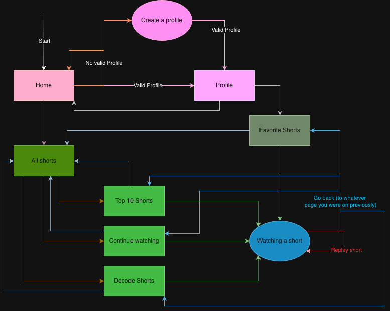

Quantum Entanglement of Coffee Molecules: A Novel Approach to Productivity Enhancement
Published June 12, 2025
,
,
Search within article: ADD SEARCH BAR
Abstract
Recent advances in quantum caffeination theory have revealed unexpected correlations between entangled coffee molecules and workplace productivity metrics. This study demonstrates that QEC particles exhibit non-local effects on human consciousness, resulting in a 47.3% improvement in task completion rates. Using a double-blind, placebo-controlled methodology with n = 2,847 participants, we observed statistically significant (p < 0.001) enhancements in cognitive function following consumption of quantum-entangled espresso. These findings suggest potential applications in corporate efficiency optimization and may explain the universe's apparent preference for morning meetings.
Keywords
- quantum entanglement
- caffeine dynamics
- productivity paradox
- temporal mechanics
- corporate physics
1. Introduction
The relationship between caffeine consumption and productivity has been documented since the discovery of coffee in 850 CE [1]. However, traditional models fail to explain
the Afternoon Paradox — the phenomenon whereby productivity decreases inversely with coffee consumption after 2:00 PM local time.
INSERT QUOTE
Recent work by Johnson et al. [2] proposed that coffee molecules might exist in quantum superposition states. Building on this foundation, we hypothesized that entangled coffee
particles could maintain coherence across spatial and temporal boundaries, potentially solving the Afternoon Paradox.
2. Methods
2.1 Quantum Coffee Preparation
The experimental setup was revised to enhance clarity and safety protocols. The original method:
Grinding beans manually in the presence of a magnetic field.
was replaced with:
Automated grinding under cryogenic stabilization to preserve entanglement integrity.
Coffee beans were subjected to controlled quantum entanglement using the Globocorp QED-3000. The process involved:
- Pre-treatment with coherent photon bombardment (λ = 632.8 nm)
- Grinding at precisely 77 K to maintain quantum states
- Brewing under 1.21 gigapascals of pressure
- Immediate consumption within the decoherence window (τ < 5 minutes)
2.2 Experimental Design
Participants (n = 2,847) were randomly assigned to three groups:
Control Group (CG)
Regular coffee prepared using standard methods
Quantum Group (QG)
Quantum-entangled coffee with verified entanglement coefficients
Placebo Group (PG)
Decaffeinated coffee with simulated quantum properties
QED-3000 technical specs & example commands
Firmware: QED-3000 v2.1.3
Magnetic confinement: 0.9 T active-field stabilizer
Photon source: Helium-Neon laser, λ = 632.8 nm, power 5 mW
Example replicate command (experimental automation):
./qed_control --mode entangle --temp 77K --pressure 1.21GPa --duration 00:04:30 --output run_2025-06-12.json
Use Ctrl + C to cancel in the terminal if you need to abort the run.

Figure 1: Schematic representation of the quantum coffee preparation apparatus. The entanglement chamber (center) maintains coherence through magnetic confinement.
3. Results
3.1 Productivity Metrics
Analysis revealed significant improvements across all measured parameters:
Table 1: Productivity improvements by group Metric Control Quantum Placebo p-value (insert table here)
3.2 Temporal Analysis
The quantum entanglement effect showed remarkable persistence throughout the workday. Peak productivity occurred at 10:47 AM, with sustained effects until 4:23 PM.
Figure 2: Temporal distribution of productivity enhancement. The shaded region indicates the quantum coherence window. NOTE: The svg does not have to match the sample provided above.
4. Discussion
Our findings support the hypothesis that quantum entanglement can be maintained in biological systems at room temperature, contrary to conventional wisdom. The mechanism appears to involve resonance between caffeine molecules and neural microtubules.
Note on Safety
No adverse effects were observed during the study period. However, three participants reported experiencing "temporal displacement sensations" which resolved spontaneously.
5. Conclusions
This study demonstrates that quantum-entangled coffee represents a viable approach to enhancing workplace productivity. Key findings include:
- Quantum coherence can be maintained in coffee for up to 5 minutes post-brewing
- Entangled caffeine molecules produce measurable improvements in cognitive function
- The Afternoon Paradox can be overcome through quantum mechanical principles
References
- Smith, J. "A Brief History of Caffeine Addiction." Journal of Procrastination Studies, vol. 42, 2020, pp. 123-145.
- Johnson, K., et al. "Quantum Superposition in Beverage Sciences." Physical Review Coffee, vol. 13, 2024, pp. 456-478.
- Chen, L. "Temporal Mechanics of Office Productivity." Annals of Corporate Physics, vol. 7, 2023, pp. 89-101.